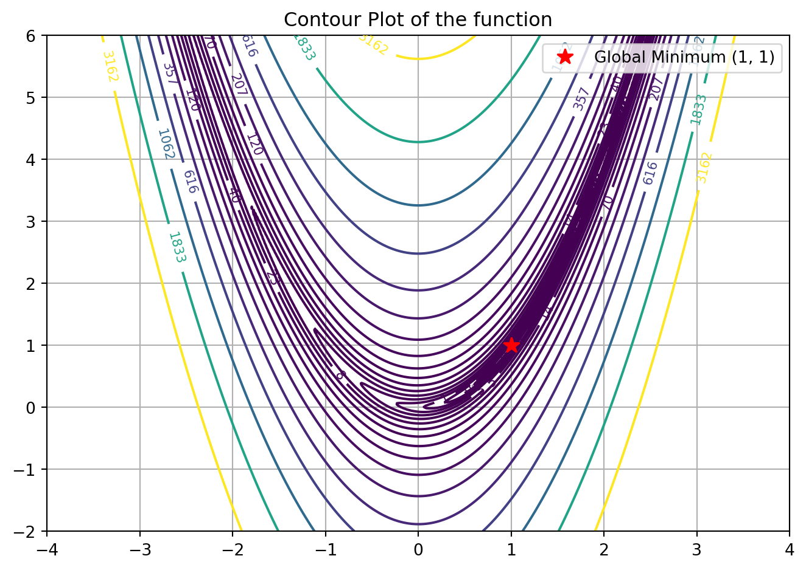
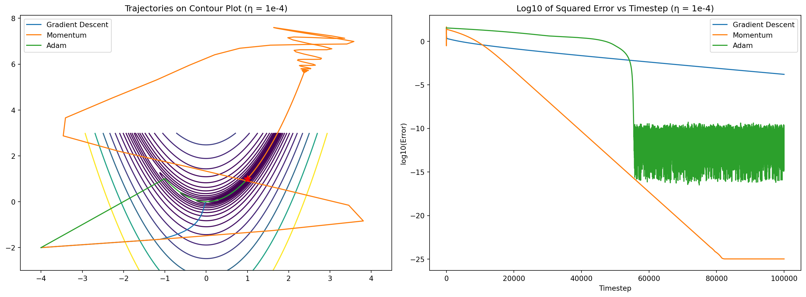
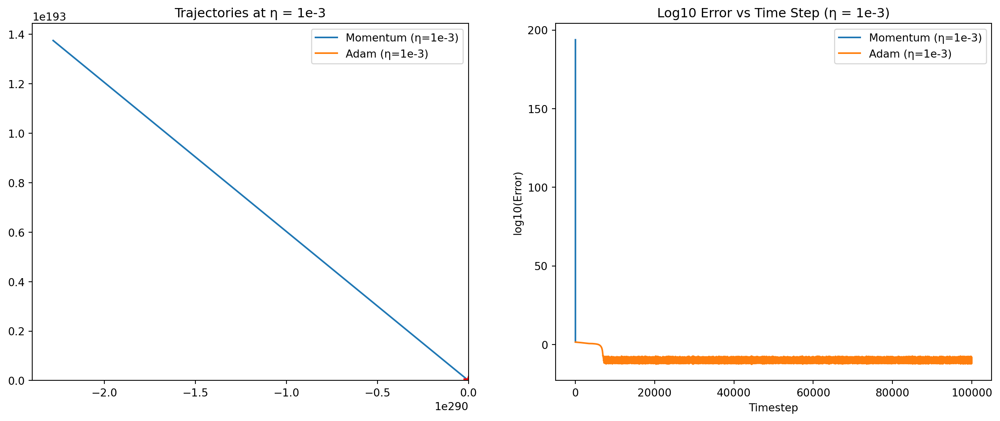
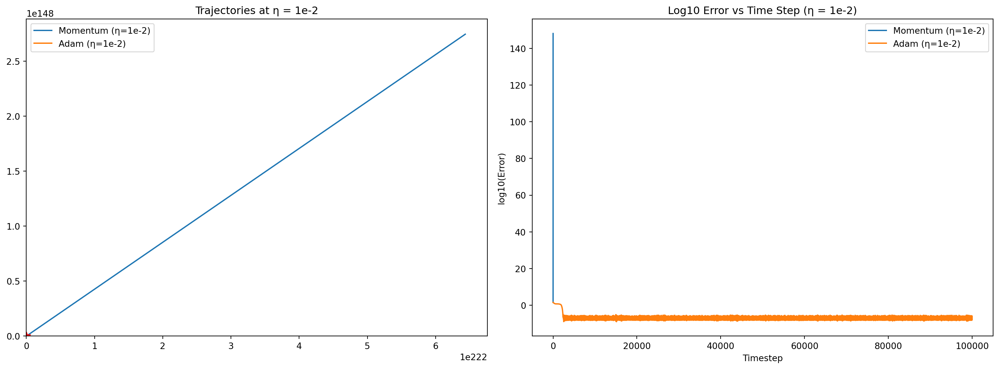
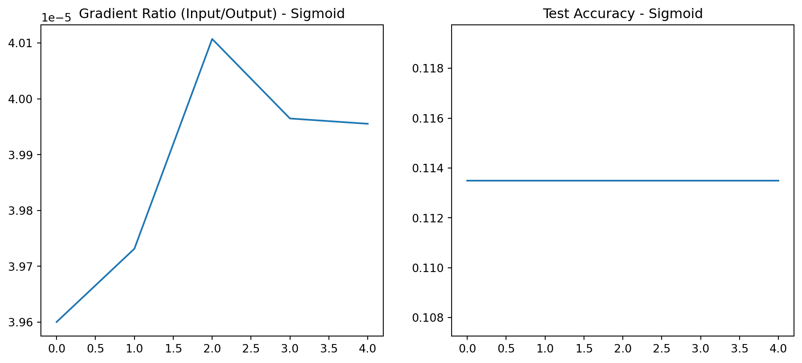

DATA 609 - Homework 7: Nonconvex Optimization and Deep Learning
Author
Eddie Xu
Instructions
For this problem I recommend submitting a python notebook or a quarto file. It might be easier with a python notebook. You can use google colab if you do not have enough computational power in your personal computer.
Problem 1: Comparing Optimization Algorithms
Consider the function, \(f(x,y) = (1-x^2) + 100(y - x^2)^2)\) which has a global minimum at, \(x = 1\). For this problem, you are going to explore using different optimization algorithms to find the global minimum, to gain an intuitive understanding of their different strengths and weaknesses.
Make a contour plot of this function. You should observe a that the contour lines are “banana-shaped” around the global minimum point, which lies in a deep valley. In technical terms, we would say that the gradient of this function is strongly anisotropic, a fact that can cause slow or no convergence for optimization algorithms.
Problem 1(a) Solution
# load dependenciesimport numpy as npimport matplotlib.pyplot as plt# define functiondef prob_func(x, y):return (1- x)**2+100* (y - x**2)**2# Create a grid of (x, y) valuesx = np.linspace(-4, 4, 400)y = np.linspace(-2, 6, 400)X, Y = np.meshgrid(x, y)Z = prob_func(X, Y)# Plot the contourcontours = plt.contour(X, Y, Z, levels=np.logspace(-1, 3.5, 20), cmap='viridis')plt.clabel(contours, inline=True, fontsize=8)plt.plot(1, 1, 'r*', markersize=10, label='Global Minimum (1, 1)')plt.title('Contour Plot of the function')plt.legend()plt.grid(True)plt.tight_layout()plt.show()

In the code chunk below I have python code for three different optimization algorithms,(1) stochastic gradient descent; (2) stochastic gradient descent with momentum, and (3) ADAM (ADAptive Moment Estimation). Starting at the initial point \(x= -4, y = -2\), use each algorithm to find the minimum of the function \(f\). Start with a learning rate of \(\kappa = 10^{-4}\) for all three algorithms, and run the algorithm for \(10^5\) timesteps. Plot the trajectories of each algorithm and the log base 10 of the error rate as a function of the time step. What do you notice about the performance of the difference algorithms, both in terms of convergence speed and ultimate accuracy?
# available defined functiondef gd(grad, init, n_epochs=1000, eta=10**-4): params=np.array(init) param_traj=np.zeros([n_epochs+1,2]) param_traj[0,]=init v=0;for j inrange(n_epochs): v=eta*(np.array(grad(params))) params=params-v param_traj[j+1,]=paramsreturn param_trajdef gd_with_mom(grad, init, n_epochs=5000, eta=10**-4, beta=0.9,gamma=0.9): params=np.array(init) # Start with initial condition param_traj=np.zeros([n_epochs+1,2]) # Save the entire trajecotry param_traj[0,]=init # Also save the initial condition to the trajectory v=0# Starting with 0 momentum# Epochs is borrowing term from machine learning# Here it means timestepfor j inrange(n_epochs): v=gamma*v+(np.array(grad(params))) # Compute v params=params-eta*v # Update the location param_traj[j+1,]=params # Save the trajectoryreturn param_trajdef adams(grad, init, n_epochs=5000, eta=10**-4, gamma=0.9, beta=0.99,epsilon=10**-8): params=np.array(init) param_traj=np.zeros([n_epochs+1,2]) param_traj[0,]=init v=0; grad_sq=0;for j inrange(n_epochs): g=np.array(grad(params)) v=gamma*v+(1-gamma)*g grad_sq=beta*grad_sq+(1-beta)*g*g v_hat=v/(1-gamma**(j+1)) grad_sq_hat=grad_sq/(1-beta**(j+1)) params=params-eta*np.divide(v_hat,np.sqrt(grad_sq_hat+epsilon)) param_traj[j+1,]=paramsreturn param_traj# load dependenciesimport numpy as npimport pandas as pdimport matplotlib.pyplot as plt# define functiondef prob_func(x, y):return (1- x)**2+100* (y - x**2)**2def prob_func_grad(xy): x, y = xy dfdx =-2* (1- x) -400* x * (y - x**2) dfdy =200* (y - x**2)return np.array([dfdx, dfdy])# intitalize the optimizerinit_point = [-4.0, -2.0]eta =1e-4n_epochs =100000# run the optimizergd_traj = gd(prob_func_grad, init_point, n_epochs=n_epochs, eta=eta)mom_traj = gd_with_mom(prob_func_grad, init_point, n_epochs=n_epochs, eta=eta)adam_traj = adams(prob_func_grad, init_point, n_epochs=n_epochs, eta=eta)# compute log10 errortrue_min = np.array([1, 1])gd_error = np.log10(np.sum((gd_traj - true_min)**2, axis=1))mom_error = np.log10(np.sum((mom_traj - true_min)**2, axis=1))adam_error = np.log10(np.sum((adam_traj - true_min)**2, axis=1))# create a contour plot of the functionx = np.linspace(-4.5, 4.5, 400)y = np.linspace(-3, 3, 400)X, Y = np.meshgrid(x, y)Z = prob_func(X, Y)# plot resultsfig, axs = plt.subplots(1, 2, figsize=(16, 6))# plot the contour with trajectoriesaxs[0].contour(X, Y, Z, levels=np.logspace(-1, 3.5, 20), cmap='viridis')axs[0].plot(gd_traj[:, 0], gd_traj[:, 1], label='Gradient Descent')axs[0].plot(mom_traj[:, 0], mom_traj[:, 1], label='Momentum')axs[0].plot(adam_traj[:, 0], adam_traj[:, 1], label='Adam')axs[0].plot(1, 1, 'r*', markersize=10)axs[0].set_title("Trajectories on Contour Plot (η = 1e-4)")axs[0].legend()# plot the log erroraxs[1].plot(gd_error, label='Gradient Descent')axs[1].plot(mom_error, label='Momentum')axs[1].plot(adam_error, label='Adam')axs[1].set_title("Log10 of Squared Error vs Timestep (η = 1e-4)")axs[1].set_xlabel("Timestep")axs[1].set_ylabel("log10(Error)")axs[1].legend()plt.tight_layout()plt.show()

Perform the same experiment for the learning rate \(\kappa = 10^{-3}\), only comparing ADAM and gradient descent with momentum. You will likely observe that one of the methods does not converge, keep the same range of values for your trajectory/contour plot as you did in (b). Which method worked better with \(\kappa = 10^{3}\)?
Now perform a comparison between ADAM with \(\kappa=10^{-2}\) against gradient descent with momentum using . What are the trade-offs between the two methods for these values of the learning rate?
Problem 1(c) and 1(d) Solution
# load dependenciesimport numpy as npimport pandas as pdimport matplotlib.pyplot as plt# define functiondef prob_func(x, y):return (1- x)**2+100* (y - x**2)**2def prob_func_grad(xy): x, y = xy dfdx =-2* (1- x) -400* x * (y - x**2) dfdy =200* (y - x**2)return np.array([dfdx, dfdy])# set the applied the functiondef adams(grad, init, n_epochs=5000, eta=10**-4, gamma=0.9, beta=0.99,epsilon=10**-8): params=np.array(init) param_traj=np.zeros([n_epochs+1,2]) param_traj[0,]=init v=0; grad_sq=0;for j inrange(n_epochs): g=np.array(grad(params)) v=gamma*v+(1-gamma)*g grad_sq=beta*grad_sq+(1-beta)*g*g v_hat=v/(1-gamma**(j+1)) grad_sq_hat=grad_sq/(1-beta**(j+1)) params=params-eta*np.divide(v_hat,np.sqrt(grad_sq_hat+epsilon)) param_traj[j+1,]=paramsreturn param_trajdef gd_with_mom(grad, init, n_epochs=5000, eta=10**-4, beta=0.9,gamma=0.9): params=np.array(init) # Start with initial condition param_traj=np.zeros([n_epochs+1,2]) # Save the entire trajecotry param_traj[0,]=init # Also save the initial condition to the trajectory v=0# Starting with 0 momentum# Epochs is borrowing term from machine learning# Here it means timestepfor j inrange(n_epochs): v=gamma*v+(np.array(grad(params))) # Compute v params=params-eta*v # Update the location param_traj[j+1,]=params # Save the trajectoryreturn param_traj# intitalize the optimizerinit_point = [-4.0, -2.0]n_epochs =100000# define the eta for part ceta_c =1e-3# run the optimizer for the momentum and ADAM with higher learning ratemom_traj_c = gd_with_mom(prob_func_grad, init_point, n_epochs=n_epochs, eta=eta_c)adam_traj_c = adams(prob_func_grad, init_point, n_epochs=n_epochs, eta=eta_c)# compute the log 10 errortrue_min = np.array([1, 1])mom_error_c = np.log10(np.sum((mom_traj_c - true_min)**2, axis=1))adam_error_c = np.log10(np.sum((adam_traj_c - true_min)**2, axis=1))# plotfig, axs = plt.subplots(1, 2, figsize=(16, 6))# plot the contour with trajectoriesaxs[0].contour(X, Y, Z, levels=np.logspace(-1, 3.5, 20), cmap='viridis')axs[0].plot(mom_traj_c[:, 0], mom_traj_c[:, 1], label='Momentum (η=1e-3)')axs[0].plot(adam_traj_c[:, 0], adam_traj_c[:, 1], label='Adam (η=1e-3)')axs[0].plot(1, 1, 'r*', markersize=10)axs[0].set_title("Trajectories at η = 1e-3")axs[0].legend()# plot the log erroraxs[1].plot(mom_error_c, label='Momentum (η=1e-3)')axs[1].plot(adam_error_c, label='Adam (η=1e-3)')axs[1].set_title("Log10 Error vs Time Step (η = 1e-3)")axs[1].set_xlabel("Timestep")axs[1].set_ylabel("log10(Error)")axs[1].legend()# define the eta for part deta_d =1e-2# Run with even higher learning ratemom_traj_d = gd_with_mom(prob_func_grad, init_point, n_epochs=n_epochs, eta=eta_d)adam_traj_d = adams(prob_func_grad, init_point, n_epochs=n_epochs, eta=eta_d)# calculate errorsmom_error_d = np.log10(np.sum((mom_traj_d - true_min)**2, axis=1))adam_error_d = np.log10(np.sum((adam_traj_d - true_min)**2, axis=1))# plotfig, axs = plt.subplots(1, 2, figsize=(16, 6))# plot the contour with trajectoriesaxs[0].contour(X, Y, Z, levels=np.logspace(-1, 3.5, 20), cmap='viridis')axs[0].plot(mom_traj_d[:, 0], mom_traj_d[:, 1], label='Momentum (η=1e-2)')axs[0].plot(adam_traj_d[:, 0], adam_traj_d[:, 1], label='Adam (η=1e-2)')axs[0].plot(1, 1, 'r*', markersize=10)axs[0].set_title("Trajectories at η = 1e-2")axs[0].legend()# plot the log erroraxs[1].plot(mom_error_d, label='Momentum (η=1e-2)')axs[1].plot(adam_error_d, label='Adam (η=1e-2)')axs[1].set_title("Log10 Error vs Time Step (η = 1e-2)")axs[1].set_xlabel("Timestep")axs[1].set_ylabel("log10(Error)")axs[1].legend()plt.tight_layout()plt.show()
/var/folders/h4/zjq554hs0b57vqfcrc5738wh0000gn/T/ipykernel_62856/3856364375.py:12: RuntimeWarning:
overflow encountered in scalar power
/var/folders/h4/zjq554hs0b57vqfcrc5738wh0000gn/T/ipykernel_62856/3856364375.py:13: RuntimeWarning:
overflow encountered in scalar power
/var/folders/h4/zjq554hs0b57vqfcrc5738wh0000gn/T/ipykernel_62856/3856364375.py:12: RuntimeWarning:
invalid value encountered in scalar subtract
/var/folders/h4/zjq554hs0b57vqfcrc5738wh0000gn/T/ipykernel_62856/3856364375.py:13: RuntimeWarning:
invalid value encountered in scalar subtract
/var/folders/h4/zjq554hs0b57vqfcrc5738wh0000gn/T/ipykernel_62856/3856364375.py:62: RuntimeWarning:
overflow encountered in square
/var/folders/h4/zjq554hs0b57vqfcrc5738wh0000gn/T/ipykernel_62856/3856364375.py:92: RuntimeWarning:
overflow encountered in square


Problem 2: Shallow Nets and MNIST
For this exercise, we will work on one of the standard model problems in Machine Learning, classifying handwritten digits. We will use an adaptation of the neural network code from your reading assignment to pytorch, which is one of the leading frameworks for training neural networks. pytorch is fairly flexible, you can use it with the CPU on your personal computer, with GPUs, and even on computing clusters. If you have trouble getting pytorch to work on your own computer I recommend trying in on google colab, or alternatively you are welcome to develop your own implementation. This and the next assignment have helper code in the provided ipython notebook Lab 7 Helper Noteook
First, you should acquire the MNIST dataset. This can be downloaded automatically using pytorch via the following code chunk:
# # Here is some code that automatically downlaods the MNIST data. Technically it will also read the# # data in if you have already downloaded and the path points to the folder where you have the files# # There will be 4 binary files which together contain the testing and training examples and the labels# # for the testing and training examples. # from torchvision import datasets, transforms# # Load MNIST# # transform defines a function which takes an image file, converts the analog bits into floating point numbers (it's a literal image file in the data), and then flattens the file. Each image is 28x28, so at the end we get a 784x1 vector# transform = transforms.Compose([transforms.ToTensor(), transforms.Lambda(lambda x: x.view(-1))])# # The first line downloads the entire MNIST dataset to the data directory (or whereever you want it)# # If the data is already there, this won't download it. THis downloads both the training and testing data.# # the transform keyword applies the transform defined above, the train dataset has 60,000 examples, and# # the test dataset has 10,000 examples. The train and test data is loaded in the variables.# train_dataset = datasets.MNIST('data/', train=True, download=True, transform=transform)# test_dataset = datasets.MNIST('data/', train=False, transform=transform)
We are going to train a simple neural network to classify the MNIST images. The neural network has an input layer of 784 neurons (one for each pixel), a 30 neuron hidden layer, and a 10 neuron output layer, which provided a weight that corresponds to the predictions of the neural network for each class. Initially we will use sigmoidal neurons to process the inputs. Throughout the rest of the assignment you will use and improve the code in this file to study the performance of different combinations of network structure, optimization algorithm choice, hyperparameters, and activation functions.
The initial configuration of the neural network uses stochastic gradient descent without momentum. The following code sets several key hyperparameters and trains the neural network:
# # batch_size determines the minibatch size# import torch# import torch.nn as nn# import torch.nn.functional as F# import torch.optim as optim# from torch.utils.data import DataLoader# train_loader = DataLoader(train_dataset, batch_size=10, shuffle=True)# test_loader = DataLoader(test_dataset, batch_size=10, shuffle=False)# # Initialize network# # net = Network([784, 30, 10])# # Train# # sol = train(net, train_loader, epochs=30, eta=0.001, test_data=test_loader)
Additional parameters can be changed within the code of the function itself (and you can organize your code in any way you see fit), in the train function:
# optimizer = optim.SGD(network.parameters(),momentum=0.8,nesterov=True, lr=eta,weight_decay=1e-5)# This uncomment this (and comment the above line) if you want to use ADAM. The betas are the memory# parameters, you can experiment with these hyperparaeters if you like:#optimizer = optim.Adam(network.parameters(),betas = (0.9,0.999), lr=eta,weight_decay=1e-5)# Here is code for using learning rate scheduling. You might find this helpful#step_size = 2#gamma = 0.7#scheduler = optim.lr_scheduler.StepLR(optimizer, step_size=step_size, gamma=gamma)
and also in the class function:
# class Network(nn.Module):# def __init__(self, sizes):# super(Network, self).__init__()# self.sizes = sizes# self.num_layers = len(sizes)# self.layers = nn.ModuleList()# for i in range(self.num_layers - 1):# layer = nn.Linear(sizes[i], sizes[i+1])# nn.init.xavier_normal_(layer.weight) # Good initialization for shallow/sigmoid nets# #nn.init.kaiming_normal_(layer.weight, mode='fan_out', nonlinearity='relu') initialization for relus# #nn.init.kaiming_uniform_(layer.weight, mode='fan_out', nonlinearity='relu') initialization for relus and deep nets# nn.init.zeros_(layer.bias) # initialize the bias to 0# self.layers.append(layer)# # Forward is the method that calculates the value of the neural network. Basically we recursively apply the activations in each# # layer# def forward(self, x):# for layer in self.layers[:-1]:# x = F.sigmoid(layer(x)) # sigmoid layers# # x = F.relu(layer(x)) # You will try the relu layer in the last problem# x = self.layers[-1](x) # return x
The default set of hyperparameters lead to a neural network that successfully trains, and has an ultimate out of sample accuracy of just below 0.95 after 30 epochs of training on my computer.
Validate this result by executing the train command with the parameters described above. Next, the learning rate is one of the most important hyperparameters in machine learning. Train the same structure of neural network with a range of different learning rates both higher and lower. Make sure you find a learning rate high enough so that the neural network performance is poor. What was the learning rate that led to the best accuracy at the end of 30 epochs? Plot the test accuracy as a function of epochs (it is one of the outputs of the train function) for all of the learning rates that you tested.
How does the ADAM optimizer handle this problem? Modify the neural network code so that the optimizer is ADAM optimizer (you will see commented code in the train function). Then train a neural network using ADAM again with a range of different learning rates (including the same starting point as in part(a)). Compare the behavior of the learning curves, the final accuracy, and the values of the learning rates that were most successful with part (a).
How good can you make your 3-layer network? You don’t need to do an exhaustive search of all possible options (which would take forever) but experiment with the optimization algorithm, the learning rate and the other hyper-parameters. For example, you could include more or fewer neurons in the hidden layer, change the values of the betas in ADAM or the momentum in SGD, alter the batch size in the data loader, change the learning rate, increase or decrease the weight decay (which is L2 regularization), or change the number of training epochs.
Some tips: - For this problem I don’t think it is likely to have an accuracy above 0.99 without expanding the data - Larger batch sizes have less “noise” so might need more regularization. They also sometimes require larger learning rates - The learning rate scheduler will decrease the learning rate by a factor of $gamma$ every steps number of epochs
Problem 2 Solution
import torchimport torch.nn as nnimport torch.nn.functional as Fimport torch.optim as optimfrom torchvision import datasets, transformsfrom torch.utils.data import DataLoaderimport matplotlib.pyplot as plt# ---------------------# 1. Load and Prepare Data# ---------------------transform = transforms.Compose([ transforms.ToTensor(), transforms.Lambda(lambda x: x.view(-1)) # Flatten 28x28 image to 784-dim vector])train_dataset = datasets.MNIST('data/', train=True, download=True, transform=transform)test_dataset = datasets.MNIST('data/', train=False, transform=transform)train_loader = DataLoader(train_dataset, batch_size=10, shuffle=True)test_loader = DataLoader(test_dataset, batch_size=10, shuffle=False)# ---------------------# 2. Define the Network# ---------------------class Network(nn.Module):def__init__(self, sizes, activation='sigmoid'):super(Network, self).__init__()self.activation = activationself.layers = nn.ModuleList()for i inrange(len(sizes) -1): layer = nn.Linear(sizes[i], sizes[i+1]) nn.init.xavier_normal_(layer.weight) if activation =='sigmoid'else nn.init.kaiming_uniform_(layer.weight, nonlinearity='relu') nn.init.zeros_(layer.bias)self.layers.append(layer)def forward(self, x):for layer inself.layers[:-1]: x = F.sigmoid(layer(x)) ifself.activation =='sigmoid'else F.relu(layer(x))returnself.layers[-1](x)# ---------------------# 3. Training Function# ---------------------def train(network, train_loader, test_loader, epochs=30, eta=0.001, optimizer_type='SGD'): criterion = nn.CrossEntropyLoss()if optimizer_type =='SGD': optimizer = optim.SGD(network.parameters(), lr=eta, momentum=0.8, nesterov=True, weight_decay=1e-5)elif optimizer_type =='Adam': optimizer = optim.Adam(network.parameters(), betas=(0.9, 0.999), lr=eta, weight_decay=1e-5)else:raiseValueError("Unsupported optimizer type.") test_acc_list = []for epoch inrange(epochs): network.train()for images, labels in train_loader: outputs = network(images) loss = criterion(outputs, labels) optimizer.zero_grad() loss.backward() optimizer.step()# Evaluate on test set network.eval() correct =0 total =0with torch.no_grad():for images, labels in test_loader: outputs = network(images) _, predicted = torch.max(outputs.data, 1) total += labels.size(0) correct += (predicted == labels).sum().item() acc = correct / total test_acc_list.append(acc)print(f"Epoch {epoch+1}/{epochs}, Accuracy: {acc:.4f}")return test_acc_list# ---------------------# 4. Run Experiments# ---------------------learning_rates = [0.0001, 0.001, 0.01, 0.05]optimizers = ['SGD', 'Adam']results = {}for opt in optimizers:for lr in learning_rates:print(f"\nTraining with {opt}, Learning Rate = {lr}") model = Network([784, 30, 10], activation='sigmoid') acc = train(model, train_loader, test_loader, epochs=30, eta=lr, optimizer_type=opt) results[(opt, lr)] = acc# ---------------------# 5. Plot Results# ---------------------plt.figure(figsize=(12, 7))for key, acc in results.items(): label =f"{key[0]} (lr={key[1]})" plt.plot(acc, label=label)plt.xlabel("Epoch")plt.ylabel("Test Accuracy")plt.title("Test Accuracy vs Epochs for Different Optimizers and Learning Rates")plt.legend()plt.grid(True)plt.show()
In deep networks, the gradients for the neural network weights can either vanish or explode due to the compositional nature of the network. This typically happens for weights near the input layer. In order to observe vanishing gradients we need to calculate the size of the gradients of the loss function with respect to each weight. The neural network training routine has commented code that computes the norm of the gradients of the input layer and the norm of the gradients of the output layer and divides and averages them across all the batches in an epoch. Uncomment the code (and modify the print and return statement) so that the gradients are computed and the gradient ratio output and saved. Then try training a deep neural network. I recommend beginning with the architecture net = Network([784,30,30,30,30,30,30,30,30,10]). Train this neural network. You will almost certainly find that the training does not succeed. What are the gradient ratios that you observe during the training?
If your computer cannot train this network, you can try this problem with a shallower network, or my recommendation is to use only a single epoch of training which should still demonstrate the vanishing gradient problem.
There are several techniques to deal with vanishing (or exploding) gradients. These include using neurons with different activation functions or using different normalization schemes. The forward method in the Network class defines the activation functions. Change the activation function from sigmoid to relu and change the initialization from Xavier.normal_ to kaiming.uniform_ (which is more optimal for deep ReLU neurons) and train the deep neural network. How does the gradient ratio change? How does the test accuracy compare to the shallow net accuracy you achieved in problem 2?
Deep neural networks are a superior architecture of image classification problems than shallow networks, however typically the dense structure that we have implemented here is not used. Instead the neural networks usually have several convolutionary layers at the beginning. With some effort and experimentation, it should still be possible to achieve a very high accuracy with a dense neural network. Experiment with the network architecture and the hyperparameters and see how good you can make your deep/dense network. You can try a combination of increasing the number of neurons in the hidden layers or incrasing the depth of the network. A structure that often works is one which decreases the number of neurons per hidden layer steadily from the input layer to the final layer (i.e. starting at 784 and ending at 10). Can you improve upon the best shallow network that you constructed for problem 3?
Epoch 1: Gradient Ratio = 0.000040, Test Accuracy = 0.1135
Epoch 2: Gradient Ratio = 0.000040, Test Accuracy = 0.1135
Epoch 3: Gradient Ratio = 0.000040, Test Accuracy = 0.1135
Epoch 4: Gradient Ratio = 0.000040, Test Accuracy = 0.1135
Epoch 5: Gradient Ratio = 0.000040, Test Accuracy = 0.1135

Epoch 1: Gradient Ratio = 2.722064, Test Accuracy = 0.8159
Epoch 2: Gradient Ratio = 2.135861, Test Accuracy = 0.8909
Epoch 3: Gradient Ratio = 2.220501, Test Accuracy = 0.9096
Epoch 4: Gradient Ratio = 2.290969, Test Accuracy = 0.9291
Epoch 5: Gradient Ratio = 2.350508, Test Accuracy = 0.9338